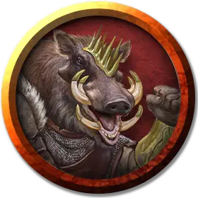

Раггадрагга
Raggadragga
Средний Гуманоид (Человек, Перевертыш), нейтрально-злой, именной НИП

Класс Доспеха 10 (10 в облике гуманоида, 11 природный доспех в облике вепря и гибридном облике)
Хиты 120 (12к8 + 66)
Скорость 30 футов (40 футов в облике кабана)
| мод | спас | ||
|---|---|---|---|
| СИЛ | 17 | +3 | +3 |
| ЛОВ | 10 | +0 | +0 |
| ТЕЛ | 15 | +2 | +2 |
| мод | спас | ||
|---|---|---|---|
| ИНТ | 10 | +0 | +0 |
| МДР | 11 | +0 | +0 |
| ХАР | 8 | −1 | −1 |
Навыки Восприятие +2
Иммунитет к урону дробящий, колющий, рубящий от немагических атак, кроме нанесённых посеребрённым оружием
Чувства пассивное Восприятие 12
Языки Общий
Опасность 4 (1100 опыта)
Бонус мастерства +2
Особенности
Языки. - Общий (не может говорить в облике кабана).
Перевертыш. Вервепрь может действием превратиться в кабана, гибрид кабана и гуманоида, или же принять свой истинный облик гуманоида. Все его статистики кроме КД остаются одинаковыми во всех обликах. Все несомое и носимое им снаряжение не превращается. Он принимает свой истинный облик, если умирает.
Атака в броске (только в облике кабана или гибрида). Если вервепрь переместится как минимум на 15 футов по прямой к цели, а затем в том же ходу попадет по ней клыками, цель получает от атаки дополнительный рубящий урон 7 (2к6). Если цель — существо, она должна преуспеть в спасброске Силы Сл 13, иначе будет сбита с ног.
Неумолимый (перезаряжается после короткого или продолжительного отдыха). Если вервепрь получает урон не больше 14, уменьшающий его хиты до 0, его хиты вместо этого уменьшаются лишь до 1.
Действия
Мультиатака (только в облике гуманоида или гибрида). Вервепрь совершает две атаки, только одна из которых может быть атакой клыками.
Молот (только в облике гуманоида или гибрида). Рукопашная атака оружием: +5 к попаданию, досягаемость 5 футов, одна цель. Попадание: Дробящий урон 10 (2к6 + 3).
Клыки (только в облике кабана или гибрида). Рукопашная атака оружием: +5 к попаданию, досягаемость 5 футов, одна цель. Попадание: Рубящий урон 10 (2к6 + 3). Если цель — гуманоид, она должна преуспеть в спасброске Телосложения Сл 12, иначе станет проклятой ликантропией вервепря.